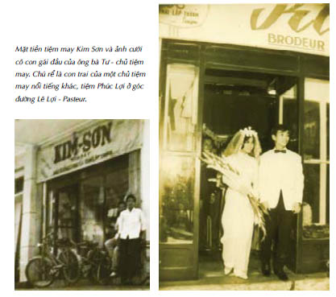

"Lẽ ra ngươi nên thả lũ chó ra! Từ khi chúng còn là chó con phụ thân ta đã nhốt chung mấy con cáo cái vào chuồng, để chúng quen với mùi cáo! Ngươi nên chứng kiến những gì chúng làm với lũ cáo!” Vẫn là những tiếng quát mắng giận dữ ấy, mỗi lần họ dừng nghỉ chân. Quả táo của Bạch Tuyết làm tính khí Louis ngày càng khó đoán, hay là do trứng cóc? Nếu không vì Lelou, Hoàng Tử Bé hẳn đã giết Reckless ngay khi Nerron dẫn anh ra khỏi chuồng ngựa. Đức vua tương lai của Lothringen thật sự ngu ngốc y như vẻ ngoài của hắn. Không, Nerron. Ngu hơn nhiều.
“Cáo là loài khôn ngoan hơn cả chó.” Nam nhân ngư ngồi trên cỏ và đang kiểm tra bàn chân bị thương của mình. Hắn đã thoa thuốc mỡ tìm thấy trong nhà mụ phù thủy lên chỗ bị thương, nhưng làn da đầy vảy xung quanh vết thương vẫn trắng nhợt như một cây nấm.
“Các ngươi đối đãi với tên thối tha ấy như nâng trứng mỏng!” Louis nóng nảy chém thanh kiếm của hắn vào ngọn lửa, những tia lửa bắn ra làm cháy xém da Nerron. “Hắn đã dắt mũi chúng ta đi vòng quanh nhiều tuần nay! Ngươi đã quên tất cả những gì ngươi học được khi làm vệ sĩ cho cha ta rồi hả?” hắn quát tháo Eaumbre. “Ông để các ngươi đối xử thô bạo với tù nhân, những kẻ tự cho rằng mình thông thái hơn ông ấy, khác hẳn thế này!”
Eaumbre kéo ủng ra khỏi bàn chân bị thương.
“Mang hẳn đến đây!” Louis ra lệnh.
Nam nhân ngư lặng lẽ đứng dậy, nhưng Nerron đã bước ra chắn đường.
“Anh ta là tù nhân của tôi!”
“Vậy sao? Từ khi nào thế?” Louis đứng dậy. Hắn hơi lắc lư, nhưng nét kiêu ngạo trên gương mặt quả đúng là của con cháu hoàng tộc. Mỗi đêm Eaumbre trói Reckless vào một trong bốn bánh xe ngựa. Nerron thích tưởng tượng ra cảnh thay Reckless bằng Louis và đưa cho lũ ngựa chiếc roi da. Nam nhân ngư đẩy gã qua một bên và khập khiễng bước về phía cỗ xe ngựa.
Reckless trông vẫn tái nhợt từ lúc bị mụ phù thủy lấy máu, và tên yêu râu xanh đã rạch một vài họa tiết máu me trên da thịt mềm của anh, nhưng anh vẫn mang vẻ mặt không biết sợ như trêu ngươi ấy, vẻ mặt khi anh đối diện với bầy sói.
Anh thậm chí còn đưa bàn tay bị trói cho Nerron. “Nam nhân ngư siết dây thừng chặt quá đến nỗi mấy ngón tay ta tê dại hết cả. Các người cởi trói cho ta chứ? Ta không định chạy trốn đâu.”
“Nhưng tại sao ngươi lại không trốn chứ?” Louis dùng ống tay áo nhung quệt mỡ dính trên miệng. Một mình hẳn ta đã ăn gần hai con thỏ mà tay huấn luyện chó săn được. “Ngươi biết phụ thân ta làm gì với những gián điệp Albion chứ?”
Reckless ném cho Nerron một tia nhìn châm biếm. Xem nào, một gián điệp ư?, ánh mắt anh dò hỏi. Ngươi nợ ta, gã Goyl.
“Ồ đúng vậy... Nhưng đó chỉ là nghề tay trái,” anh nói lớn. “Thật ra tôi là một thợ săn kho báu như gã Goyl đây, và trong chuyến đi săn này tôi e rằng chúng ta phải bắt tay nhau thôi. Các người có thủ cấp và bàn tay. Tôi có quả tim. Và nếu bấy nhiêu vẫn chưa đủ chứng minh sự thiết yếu của tôi, hãy hỏi những người lùn liệu họ có biết xác của Guismund ở đâu không.”
Ồ, con chó xảo quyệt.
Mất một vài giây Louis mới hiểu những gì Reckless nói. Hẳn lắc lư đến độ suýt vấp vào ngọn lửa khi loạng choạng bước đến chỗ anh. Cho đến giờ Lelou cho hắn ăn trứng cóc ba lần mỗi ngày (Nam nhân ngư thường xuyên ra ngoài hàng giờ đồng hồ để tìm chúng), nhưng tác dụng dần mất đi vào buổi tối. Ngoài ra hơi thở của thái tử lại có mùi bột tiên nhí.
“Ngươi rõ ràng đã quên ngươi đang nói chuyện với ai!” Louis cố hết sức ra vẻ nguy hiểm.
Reckless cúi người. “Thái tử Louis xứ Lothringen. Tôi đã từng làm việc cho phụ thân ngài, có lẽ ngài không nhớ ra tôi. Hồi đó ông ấy cần thuốc giải độc cho một loại tình dược. Cô chị họ của ngài là thủ phạm, còn ngài là nạn nhân. Không phải cô ta đã biến ngài thành một con ếch sao?”
“Câu chuyện bị những kẻ thù của phụ thân ta loan truyền.” Louis nổi giận suýt nuốt cả lưỡi. “Ta đã phản đối việc để gã bạn của ngươi lại với mụ phù thủy! Ngươi lẽ ra đã phải gọi con cáo cái trở về nếu nam nhân ngư lần lượt cắt từng ngón tay một của hắn!”
“Thái tử!” Nerron không chắc giọng Lelou nghe có vẻ giận dữ hay bị ấn tượng.
Louis phớt lờ lão. “Gọi cô ta trở về!” Hắn thở hổn hển. “Ngay bây giờ! Hoặc là ta sẽ ra lệnh cho nam nhân ngư cắt từng ngón tay của ngươi! Cha ta thường bắt đầu từ ngón cái.”
Hắn gật đầu ra hiệu cho nam nhân ngư. Người ta không thể đọc được trên gương mặt đầy vảy Eaumbre nghĩ gì về mệnh lệnh ấy, nhưng hắn ta đã rút dao ra.
“Gọi trở về? Tôi làm thế nào được?” Reckless hỏi. “Cáo chắc chắn đã đi trước chúng ta hàng dặm. Chân loài cáo nhanh hơn cỗ xe ngựa vàng của ngài nhiều. Cô ấy đang chờ tôi ở Thành Phố Chết. Hãy hỏi gã Goyl. Tôi chắc chắn là cây nỏ thần ở đó, và tôi lấy quả tim đặt cược rằng không có tôi và gã Goyl, ngài sẽ không sống sót nổi quá ba bước trong đống đổ nát đó.”
Mặt Louis trắng bệch như sữa đông.
“Quên ngón tay đi!” hắn quát nam nhân ngư. “Cắt cổ hắn!”
Eaumbre do dự. Dù vậy cuối cùng hắn cũng kề dao lên cổ Reckless.
Đủ rồi. Nerron tóm lấy Louis và lôi hắn theo gã.
“Ngài không nghe gì sao?” gã rít lên. “Hắn ta không chỉ có quả tim! Hắn ta còn có cả xác của Guismund nữa. Ngài nghĩ chúng ta sẽ dùng thủ cấp và bàn tay thế nào nếu không có cái xác? Giết hắn đi, nhưng hãy tìm cách giải thích với phụ thân ngài tại sao chúng ta không tìm ra cây nỏ thần!”
Louis trừng trừng nhìn Nerron đầy căm ghét, như thể hắn sắp sửa cắt phăng ngón tay gã. Không dễ dàng thế với một Goyl đâu, Hoàng Tử Bé. “Hắn sỉ nhục ta! Ta muốn thấy hẳn chết. Ngay lập tức!”
Nam nhân ngư đang nhìn bọn họ, dao vẫn kề trên cổ Reckless. Trong những lúc hiểm nghèo bà mẹ của Nerron hay cầu nguyện một nữ vương bí ẩn nào đó, sống trên ngọn núi đồng và mặc váy áo làm bằng đá khổng tước. Nerron sẽ rất vui mừng được cầu xin bà ban cho bộ não của thái tử điện hạ một tia lý trí, nhưng sự cứu rỗi đang hấp tấp lao đến bên cạnh Louis trong hình dạng của Lelou.
“Thái tử!” lão thì thầm với một nụ cười xoa dịu. “Thần e rằng gã Goyl nói đúng. Ngay cả phụ thân người thỉnh thoảng cũng phải bắt tay với kẻ thù. Ngài vẫn có thể giết Reckless sau mà!"
Louis nhăn trán (thật xúc động làm sao cái cách da con người ta tạo thành nếp nhăn khi họ cố sức suy nghĩ) và ném cho tên tù nhân của bọn họ một cái nhìn tăm tối.
“Được thôi, tạm hãy để hắn được sống!” hắn ra lệnh cho nam nhân ngư. “Nhưng siết dây thừng thật chặt vào.”